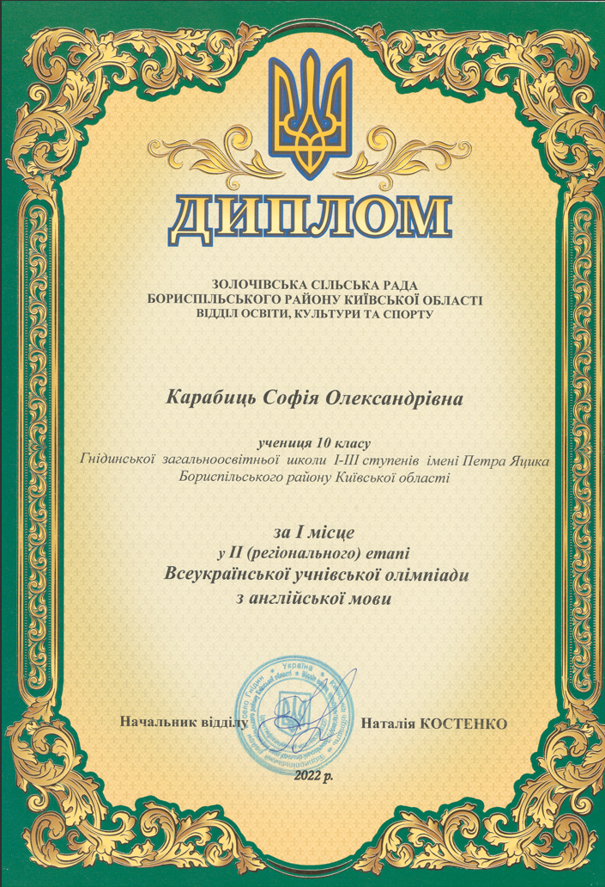
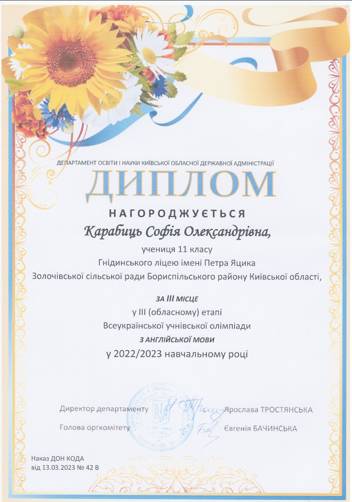
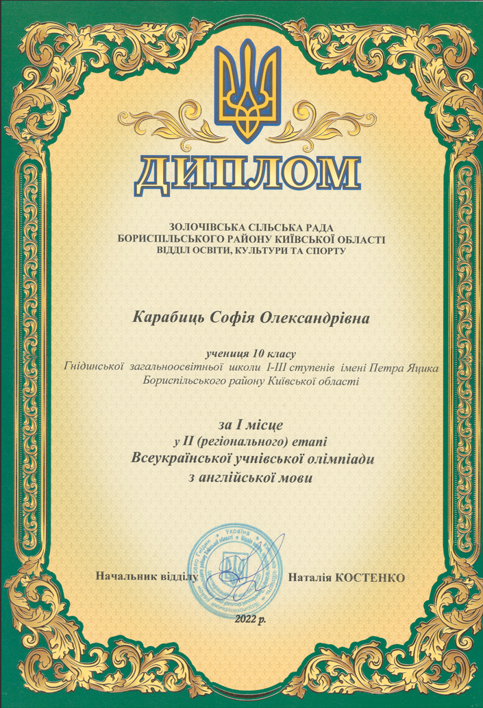
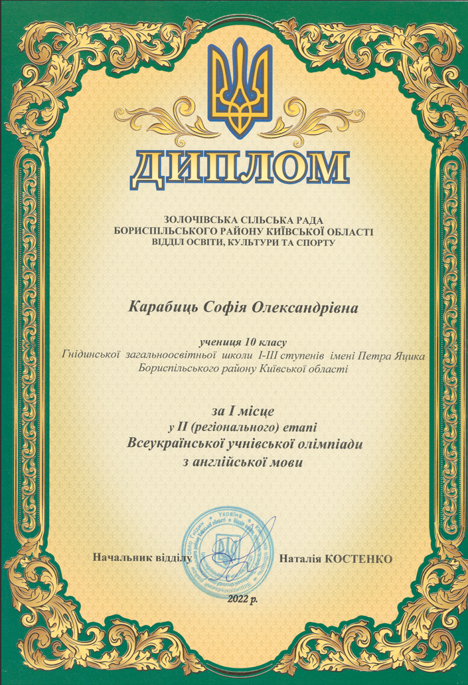

I`m hardworking and responsible individual that always gets to the bottom of things. I really like learning
something new.
Education
Secondary education - Hnidyn school name of Petro Jacyk (2012-2023).
Bachelor of Software Engineering - Kyiv Aviation Institute (2023 - Present).
Work Experience
Currently I don't have any work experience, so I'm looking for an internship.
Skills
Math: 3/5
Time management: 4/5
Perseverance: 5/5
English fluency: B1-B2
Responsibility: 5/5
Awards and Certifications
Перше місце у другому етапі Всеукраїнської учнівської олімпіади з англійської мови (2022)
First place in the second stage of the All-Ukrainian Student Olympiad in English (2022)

Перше місце в другому етапі Всеукраїнської учнівської олімпіади з англійської мови (2023)
First place in the second stage of the All-Ukrainian Student Olympiad in English (2023)
Третє місце у другому етапі Всеукраїнської учнівської олімпіади з інфорамційних технологій (2023)
Third place in the second stage of the All-Ukrainian Student Olympiad in Information Technologies
(2023)
Третє місце у третьому етапі Всеукраїнської учнівської олімпіади з англійської мови (2023)
Third place in the third stage of the All-Ukrainian Student Olympiad in English (2023)


 
